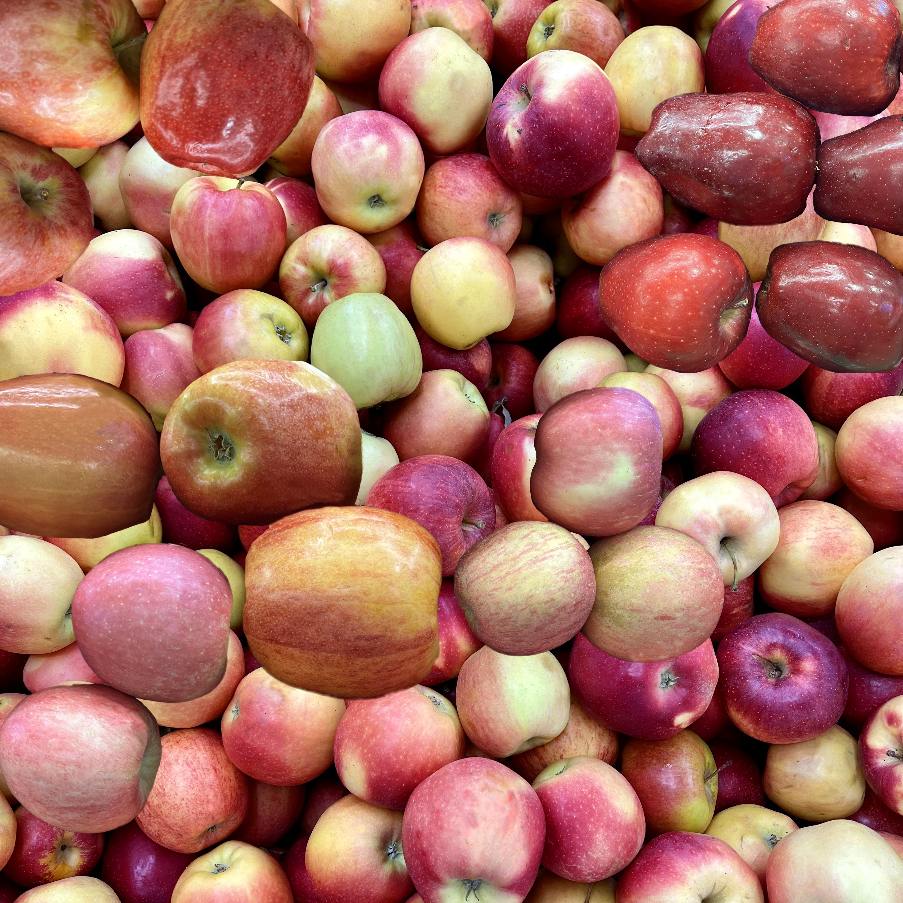

APPLE
Can boost gut health
Promotes healthier bones
Good for the heart and lungs
Help maintain a moderate weight
Supports healthy blood sugar levels
Supports brain Health and mental health
Reduce the risk of stroke, diabetes, cancer
[Nutrients: Vitamin C,Calcium, Dietary fiber, Folate, Iron, Magnesium, Potassium, Protein]
AVOCADO
Fights cancer cell growth
Reduce heart disease risk factors
Versatile and delicious ingredient
Beneficial for heart and gut health
Supports eye, skin and hair health
Reduces risk of metabolic syndrome
May help promote a healthy body weight
Protects against insulin resistance and diabetes
Beneficial for mothers during pregnancy and breastfeeding
A rich source of antioxidant and anti-inflammatory compounds
[Nutrients: Dietary fiber, Potassium, Vitamin B-6, Vitamin C, Vitamin E, Folate, Iron, Magnesium, Vitamin A, Vitamin K]
BANANA
Lower risk of stroke
Produce red blood cells
Lessen lactose intolerance
Helps muscles work better
Maintain a healthy nervous system
Ease irritable bowel syndrome (IBS)
Treat some gastrointestinal infections
Can help keep your bones healthy as you age
Remove unwanted chemicals from liver and kidneys
Metabolize amino acids and carbohydrates and fats, turning them into energy
[Nutrients: Dietary fiber, Potassium, Vitamin B-6, Vitamin C, Iron, Magnesium, , Vitamin A]
BLACKBERRY
Boosts body functions
Reduces inflammation
Prevents cardiovascular disease
Protects and improves brain function
Help to manage unhealthy cholesterol
Improves digestion and blood sugar levels
May help prevent cancer and boost brainpower
[Nutrients: Magnesium, Vitamin C, Vitamin K, Dietary fiber, Iron, Potassium, Protein]

BLUEBERRY
Protect cholesterol in blood
May help maintain eye health
Reduce muscle damage after strenuous exercise
Help maintain brain function and improve memory
May lower blood pressure and prevent heart disease
Have highest antioxidant capacity of all the popular fruits
Reduce DNA damage, which may help protect against aging and cancer
[Nutrients: Dietary fiber, Magnesium, Vitamin C, Vitamin K, Iron, Potassium, Protein]
CACTUS FRUIT
Preventing liver damage
Lower blood sugar levels
Boosts the immune system
Can lower cholesterol levels
Reduces dark circles around eyes
Protects people from heart diseases
Reduces the frequencies of migraines
Colon cleansing and soothes the stomach
Prevents gastric ulcers and inflammation
[Nutrients: Calcium, Magnesium, Potassium, Beta-carotene, Dietary fiber, Phosphorus, Vitamin A, Vitamin B-6, Vitamin C, Vitamin E, Vitamin K]
CANTALOUPE
[Nutrients: Potassium, Vitamin A, Vitamin C, Dietary fiber, Iron, Magnesium, Protein]
CHERRY TOMATO
Prevents diseases
Boosts bone health
Promote skin health
Reduces oxidative stress
Boost anticancer properties
Improve eye health and heart health
Stroke, chronic disease, and prostate cancer Prevention
[Nutrients: Potassium, Vitamin A, Calcium, Dietary fiber, Iron, Protein, Vitamin C]
CLEMENTINE
Supports weight loss
May boost skin health
Prevents kidney stones
Boosts immune function
Combats cancer cell growth
Can increase your fiber intake
Assists in the healthy functioning of the liver
Help in reducing the risk of dental inflammation and avert tooth loss
[Nutrients: Vitamin B-6, Vitamin C, Calcium, Dietary fiber, Folate, Magnesium, Protein, Potassium]
COCONUT
Treats abdominal fat
Good for oral hygiene
Helps improve skin health
Promote blood sugar control
Help protect cells from damage
Controls acidity and heart burn
Reduce the chances of Alzheimer’s
Extremely beneficial during pregnancy
[Nutrients: Dietary fiber, Iron, Manganese, Potassium, Magnesium,Protein, Vitamin C]
CRANBERRY
Improve eyesight
Maintain digestive health
Slowing cancer progression
Protect against liver disease
Prevent urinary tract infections
Reduce the risk of cardiovascular disease
Enhancing oral health and prevent cavities
Reduce inflammation and lower blood pressure
[Nutrients: Vitamin B-6, Vitamin C,Dietary fiber, Iron, Magnesium, Potassium, Protein, Vitamin K]
DRAGON FRUIT
Fights ageing skin
Good for hair and eyes
Promotes a healthy gut
Strengthens immune system
May help fight chronic disease
Reduces risk of diabetes and cancer
Beneficial in controlling blood sugar levels
[Nutrients: Magnesium, Phosphorous, Potassium, Vitamin C, Calcium, Dietary fiber, Iron, Protein, Vitamin E]
DURIAN
Natural aphrodisiac
Boosts collagen synthesis
Anti-Depressant properties
Strengthens bones and joints
Prevents cardiovascular diseases
Cures anemia and treats insomnia
Bolsters immunity and metabolism
Help combat skin pigmentation and wrinkles
Maintains blood sugar levels and regulates blood pressure levels
[Nutrients: Magnesium, Manganese, Potassium, Thiamine, Vitamin B-6, Vitamin C, Dietary fiber, Iron, Protein, Vitamin A]

GRAPE
Relieve constipation
Support bone health
Benefit eye, skin, and hair health
Protect against bacteria and fungi
Improve memory, attention, and mood
Slow signs of aging and promote longevity
Help lower blood pressure and reduce cholesterol
Protect against diabetes and lower blood sugar levels
May prevent the growth and spread of multiple types of cancer
[Nutrients: Copper, Vitamin K, Calcium, Dietary fiber, Iron, Magnesium, Potassium, Protein, Vitamin B-6, Vitamin C]

GRAPEFRUIT
Improve heart health
Benefit immune system
Helps with weight management
Reduce the risk of kidney stones
Help prevent insulin resistance and diabetes
[Nutrients: Vitamin A, Vitamin C, Calcium, Dietary fiber, Folate, Iron, Potassium, Protein, Thiamine]

GUAVAS
Boost heart health
Help boost immunity
Slow down the aging of skin
Enhances absorption of food
Helps in digestion and weight loss
Help relieve painful symptoms of menstruation
Manages blood pressure levels and blood sugar level
[Nutrients: Vitamin A, Vitamin C, Phosphorus, Potassium, Calcium, Dietary fiber, Folate, Iron, Magnesium, Protein]

JUJUBE
Insomnia treatment
General gastrointestinal benefits
Help with chronic constipation relief
Heart support and blood pressure helper
Immune support and cancer-fighting abilities
Supports cognitive health, uplifting, and calming
Rich in disease-fighting antioxidants and Vitamin C
[Nutrients: Potassium, Vitamin C, Dietary fiber, Iron, Manganese, Phosphorus, Potassium, Protein]

KIWI
Aids wound healing
Supports heart health
Improves digestive health
May promote healthy skin and hair
May shorten duration of cold symptoms
Aid prevention of iron-deficiency anemia
[Nutrients: Magnesium, Potassium, Vitamin C, Vitamin E, Vitamin K, Calcium, Dietary fiber, Iron, Protein, Vitamin A]

LEMON
Good hair care
Cure throat infection
Support heart health
Protect against anemia
Help control body weight
Stop internal blood bleeding
Treat from flu, cold, and fever
Cure respiratory problem such as asthma
Reduce cancer risk and digestion problems
Eliminate bad cholesterol and act as a blood purifier
[Nutrients: Calcium, Potassium, Vitamin C, Dietary fiber, Iron, Magnesium, Protein]

LIME
Guard against stroke
Prevent kidney stones
Healthy bones and teeth
Reduce heart disease risk
Increases iron absorption
Promote healthy skin and boost immune system
Protect against infection and reduce inflammation
[Nutrients: Vitamin C, Calcium, Dietary fiber, Iron, Magnesium, Potassium, Protein]

LOGAN
Reducing pain and swelling
Decreasing stomach aches/pains
Increasing energy and reducing fatigue
Defending against negative effects of stress
Supporting cognitive function and memory
May have antiviral, antifungal and antibacterial effects
Provides antioxidants and anti-inflammatory compounds
Helping to manage mood related issues such as depression
Promoting relaxation and calmness, which can help improve sleep quality
[Nutrients: Phosphorus, Potassium, Dietary fiber, Iron, Magnesium, Protein, Vitamin B-2, Vitamin C]

MANGO
Improve digestive health
Supports eye health heart health
Protection from free radical damage
Contains immune-boosting nutrients
Reduce the risk of developing diabetes
Help lower your risk of certain cancers
Improved digestive, cardiovascular, and gut health
[Nutrients: Vitamin A, Vitamin B-6, Vitamin E, Calcium, Dietary fiber, Folate, Potassium, Protein, Vitamin C]

MANGOSTEEN
Promote weight loss
Have anticancer effects
Helps maintain healthy skin
Supports blood sugar control
Helpful for menstrual problems
Have anti-inflammatory properties
Promotes a healthy immune system
Regulates blood pressure and boosts heart health
[Nutrients: Folate, Manganese, Calcium, Dietary fiber, Iron, Magnesium, Potassium, Protein, Vitamin C]

NECTARINE
Help prevent anemia
Lower your risk of cancer
Have a Low glycemic index
High in bioactive polyphenols
Help fight against hypokalemia
High in disease-fighting antioxidants
Improve skin health and digestive system
[Nutrients: Vitamin C, Calcium, Dietary fiber, Iron, Magnesium, Potassium, Protein]

ORANGE
Protects cells from damage
Helps promote heart health
Easier to absorb iron to fight anemia
Helps fight cancer-causing free radicals
Diets high in citrus fruits may protect against chronic diseases
Helps body make collagen, which is a protein that heals wounds and makes your skin smoother
Slows the advance of age-related macular degeneration (AMD), a leading cause of vision loss
[Nutrients: Dietary fiber, Vitamin C, Calcium, Magnesium, Potassium, Protein, Vitamin B-6]

PAPAYA
Asthma prevention
Boosts immune system
Protection against heart disease
Improves skin and protects vision
Reduce the risk of Alzheimer’s disease
Potentially protects against prostate cancer
Help with digestion and reduce inflammation
Protection against macular degeneration and Rheumatoid Arthritis
[Nutrients: Folate, Vitamin A, Calcium, Dietary fiber, Magnesium, Potassium, Protein, Vitamin C]

PASSION FRUIT
Reduce inflammation
Support healthy vision
Enhance digestive health
Improve insulin sensitivity
Boosts the immune system
May aid diabetes treatment
Prevents iron-deficiency anemia
Improve cognitive health and reduce anxiety
Manage blood sugar levels and blood circulation
[Nutrients: Vitamin A, Vitamin C, Potassium, Calcium, Dietary fiber, Iron, Magnesium, Protein]

PEACH
Antioxidant benefits
Improve heart health
Have digestive benefits
Act as antioxidants and aid detoxification
Preserving eyes, skin, and immune system
Smooth digestion and a lower risk of gut disorders
Limits the formation, growth, and spread of cancerous cells
[Nutrients: Vitamin A, Vitamin C, Dietary fiber, Manganese, Potassium, Protein, Vitamin E, Vitamin K]

PEAR
Promote gut health
Prevents Osteoporosis
Boosts immune system
Controls blood sugar level
Healthy and nourished hair
Anti-inflammatory properties
Reduce risk of type 2 diabetes
Lower risk of allergic reactions
Prevent gallbladder, colitis, arthritis, gout
Keep wrinkles away and good for lip treatment
[Nutrients: Copper, Vitamin C, Dietary fiber, Magnesium, Potassium, Protein, Vitamin K]

PERSIMMON
Benefits vision
Improve joint health
Delay premature aging
Improve metabolic activity
Reduce the risk of breast cancer
Strengthen your immune system
Control blood pressure and regulate blood circulation
Packed full of antioxidants which helps reduce inflammation
Promote a healthy digestive system and have better gastrointestinal Health
[Nutrients: Manganese, Potassium, Vitamin A, Calcium, Copper, Dietary fiber, Iron, Protein, Vitamin B-6, Vitamin C]

PINEAPPLE
Asthma prevention
Lower blood pressure
Promotes tissue healing
Age-related macular degeneration
Contain anti-Inflammatory and analgesic properties
Relieves arthritis pain and helps with post-workout recovery
[Nutrients: Manganese, Vitamin B-6, Vitamin C, Calcium, Copper, Dietary fiber, Folate, Iron, Magnesium, Potassium, Protein, Thiamine, Vitamin A]

POMEGRANATE
Support urinary health
Improve oxidative stress
Supports digestive health
Improve exercise endurance
May be Beneficial for Arthritis
Help prevent chronic inflammation
Reduce blood pressure and inflammation in the arteries
Contain compounds that help fight off potentially harmful bacteria, fungi, and yeasts
[Nutrients: Folate, Potassium, Vitamin B-6, Calcium, Dietary fiber, Iron, Magnesium, Phosphorus, Protein, Vitamin A, Vitamin C]

POMELO
Fortifies bones
Treats constipation
Rich in antioxidants
Promote weight loss
Help manage diabetes
Relaxes muscle cramps
Have anti-inflammatory effects
Improve hair health and eyesight
May be antibacterial and antifungal
Boost heart health by reducing levels of cholesterol
[Nutrients: Copper, Potassium, Vitamin C, Dietary fiber, Protein, Thiamine]

PRUNE
Relieve constipation
Promote bone health
Slow the ageing process
Supports digestive health
May reduce colon cancer risk
Reduce the risk of type 2 diabetes
Helps Weight Management and Loss
Lower blood pressure, Blood Sugar, and cholesterol levels
[Nutrients: Potassium, Vitamin A, Vitamin K, Calcium, Dietary fiber, Magnesium, Manganese, Protein, Vitamin B6]

RASPBERRY
Alleviate arthritis
Improve digestion
Sharpen brain and memory
Help fight cancer and eczema
Rich in anti-aging antioxidants
Boost eye health and hair health
Have anti-inflammatory properties
Enhance fertility and improve Sexual Health
Promotes health of tissues and blood vessels and maintain cardiovascular health
[Nutrients: Manganese, Vitamin C, Vitamin K, Calcium, Copper, Dietary fiber, Iron, Magnesium, Potassium, Protein]

STRAWBERRY
Rich in antioxidants
Boost digestive health
Supports healthy pregnancy
Promote skin and bone health
High in fiber and aids in detoxification
Defends against heart disease and cancer
Benefits brain health and prevents neurodegenerative diseases
[Nutrients: Manganese, Potassium, Vitamin C, Calcium, Dietary fiber, Folate, Iron, Protein, Magnesium, Vitamin A]

WATERMELON
Improve digestion
Help stay hydrated
Reduce risk of certain chronic diseases
Reduce inflammation and oxidative stress
Relieve muscle soreness and help prevent macular degeneration
Support heart health by lowering blood pressure and cholesterol
[Nutrients: Potassium, Vitamin C, Calcium, Dietary fiber, Iron, Magnesium, Protein, Vitamin A]